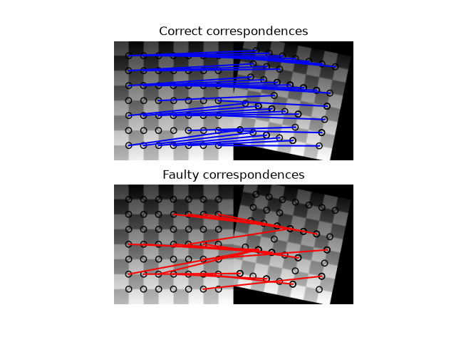

Note
Go to the end to download the full example code or to run this example in your browser via Binder
Robust matching using RANSAC#
In this simplified example we first generate two synthetic images as if they were taken from different view points.
In the next step we find interest points in both images and find correspondences based on a weighted sum of squared differences of a small neighborhood around them. Note, that this measure is only robust towards linear radiometric and not geometric distortions and is thus only usable with slight view point changes.
After finding the correspondences we end up having a set of source and destination coordinates which can be used to estimate the geometric transformation between both images. However, many of the correspondences are faulty and simply estimating the parameter set with all coordinates is not sufficient. Therefore, the RANSAC algorithm is used on top of the normal model to robustly estimate the parameter set by detecting outliers.

Ground truth:
Scale: (0.9000, 0.9000), Translation: (-10.0000, 20.0000), Rotation: -0.2000
Affine transform:
Scale: (0.9015, 0.8904), Translation: (-9.3136, 14.9768), Rotation: -0.1678
RANSAC:
Scale: (0.8999, 0.9001), Translation: (-10.0005, 19.9744), Rotation: -0.1999
import numpy as np
from matplotlib import pyplot as plt
from skimage import data
from skimage.util import img_as_float
from skimage.feature import corner_harris, corner_subpix, corner_peaks, plot_matches
from skimage.transform import warp, AffineTransform
from skimage.exposure import rescale_intensity
from skimage.color import rgb2gray
from skimage.measure import ransac
# generate synthetic checkerboard image and add gradient for the later matching
checkerboard = img_as_float(data.checkerboard())
img_orig = np.zeros(list(checkerboard.shape) + [3])
img_orig[..., 0] = checkerboard
gradient_r, gradient_c = np.mgrid[0 : img_orig.shape[0], 0 : img_orig.shape[1]] / float(
img_orig.shape[0]
)
img_orig[..., 1] = gradient_r
img_orig[..., 2] = gradient_c
img_orig = rescale_intensity(img_orig)
img_orig_gray = rgb2gray(img_orig)
# warp synthetic image
tform = AffineTransform(scale=(0.9, 0.9), rotation=0.2, translation=(20, -10))
img_warped = warp(img_orig, tform.inverse, output_shape=(200, 200))
img_warped_gray = rgb2gray(img_warped)
# extract corners using Harris' corner measure
coords_orig = corner_peaks(
corner_harris(img_orig_gray), threshold_rel=0.001, min_distance=5
)
coords_warped = corner_peaks(
corner_harris(img_warped_gray), threshold_rel=0.001, min_distance=5
)
# determine sub-pixel corner position
coords_orig_subpix = corner_subpix(img_orig_gray, coords_orig, window_size=9)
coords_warped_subpix = corner_subpix(img_warped_gray, coords_warped, window_size=9)
def gaussian_weights(window_ext, sigma=1):
y, x = np.mgrid[-window_ext : window_ext + 1, -window_ext : window_ext + 1]
g = np.zeros(y.shape, dtype=np.double)
g[:] = np.exp(-0.5 * (x**2 / sigma**2 + y**2 / sigma**2))
g /= 2 * np.pi * sigma * sigma
return g
def match_corner(coord, window_ext=5):
r, c = np.round(coord).astype(np.intp)
window_orig = img_orig[
r - window_ext : r + window_ext + 1, c - window_ext : c + window_ext + 1, :
]
# weight pixels depending on distance to center pixel
weights = gaussian_weights(window_ext, 3)
weights = np.dstack((weights, weights, weights))
# compute sum of squared differences to all corners in warped image
SSDs = []
for cr, cc in coords_warped:
window_warped = img_warped[
cr - window_ext : cr + window_ext + 1,
cc - window_ext : cc + window_ext + 1,
:,
]
SSD = np.sum(weights * (window_orig - window_warped) ** 2)
SSDs.append(SSD)
# use corner with minimum SSD as correspondence
min_idx = np.argmin(SSDs)
return coords_warped_subpix[min_idx]
# find correspondences using simple weighted sum of squared differences
src = []
dst = []
for coord in coords_orig_subpix:
src.append(coord)
dst.append(match_corner(coord))
src = np.array(src)
dst = np.array(dst)
# estimate affine transform model using all coordinates
model = AffineTransform()
model.estimate(src, dst)
# robustly estimate affine transform model with RANSAC
model_robust, inliers = ransac(
(src, dst), AffineTransform, min_samples=3, residual_threshold=2, max_trials=100
)
outliers = inliers == False
# compare "true" and estimated transform parameters
print("Ground truth:")
print(
f'Scale: ({tform.scale[1]:.4f}, {tform.scale[0]:.4f}), '
f'Translation: ({tform.translation[1]:.4f}, '
f'{tform.translation[0]:.4f}), '
f'Rotation: {-tform.rotation:.4f}'
)
print("Affine transform:")
print(
f'Scale: ({model.scale[0]:.4f}, {model.scale[1]:.4f}), '
f'Translation: ({model.translation[0]:.4f}, '
f'{model.translation[1]:.4f}), '
f'Rotation: {model.rotation:.4f}'
)
print("RANSAC:")
print(
f'Scale: ({model_robust.scale[0]:.4f}, {model_robust.scale[1]:.4f}), '
f'Translation: ({model_robust.translation[0]:.4f}, '
f'{model_robust.translation[1]:.4f}), '
f'Rotation: {model_robust.rotation:.4f}'
)
# visualize correspondence
fig, ax = plt.subplots(nrows=2, ncols=1)
plt.gray()
inlier_idxs = np.nonzero(inliers)[0]
plot_matches(
ax[0],
img_orig_gray,
img_warped_gray,
src,
dst,
np.column_stack((inlier_idxs, inlier_idxs)),
matches_color='b',
)
ax[0].axis('off')
ax[0].set_title('Correct correspondences')
outlier_idxs = np.nonzero(outliers)[0]
plot_matches(
ax[1],
img_orig_gray,
img_warped_gray,
src,
dst,
np.column_stack((outlier_idxs, outlier_idxs)),
matches_color='r',
)
ax[1].axis('off')
ax[1].set_title('Faulty correspondences')
plt.show()
Total running time of the script: (0 minutes 0.475 seconds)